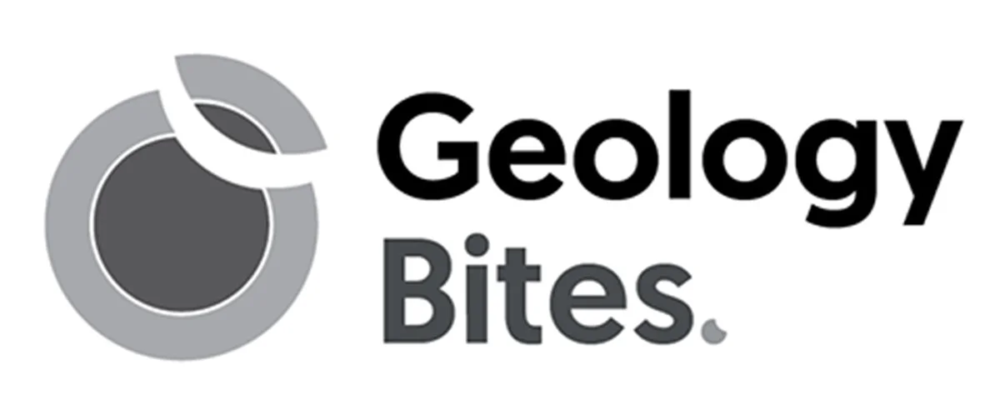
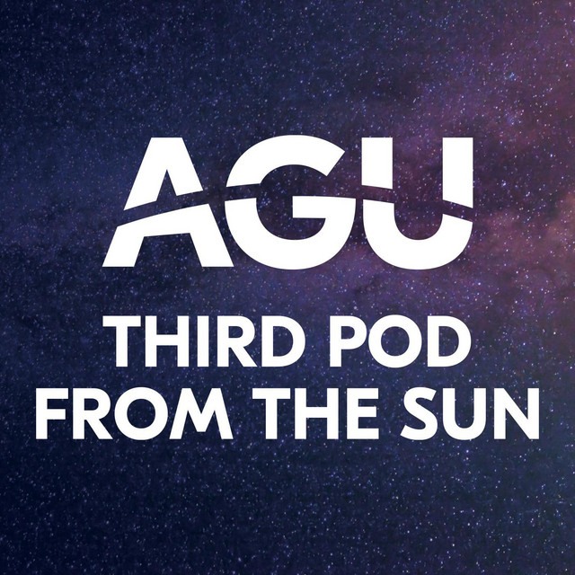
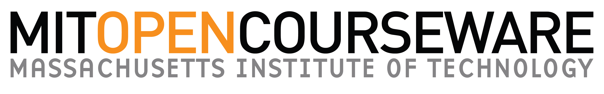
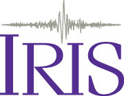
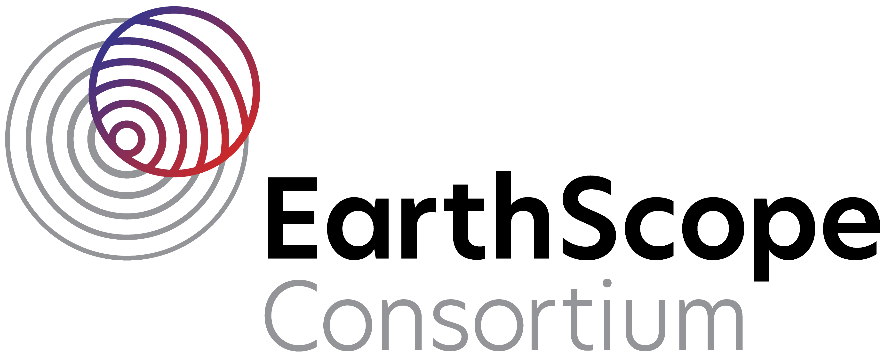
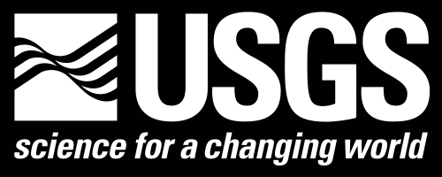

Geology Bites
Short conversations with researchers about Earth-science ideas, processes, and discoveries. Browse by topic and choose episodes that interest you.
Listen to Geology BitesOptional podcasts, lectures, and open materials for students who would like to explore Earth science beyond scheduled teaching.
Please read first
External free resources
These materials are shared as free, optional resources for independent study. They are not officially endorsed by Cardiff University Kazakhstan, are not required for any module, and do not constitute examination or assessment content. Official module materials and assessment guidance remain the only authoritative source.
Career development
A practical guide to finding geology and mineral exploration positions, PhD opportunities, and specialist funding.
Open the guideListen

Short conversations with researchers about Earth-science ideas, processes, and discoveries. Browse by topic and choose episodes that interest you.
Listen to Geology Bites
An American Geophysical Union podcast exploring the people, methods, and stories behind Earth and space science.
Explore the podcastA weekly show hosted by working geoscientists covering current research, field methods, and geology news, with a "Paper Friday" segment discussing a recent publication.
Listen to Don't Panic GeocastWatch and study

A broad undergraduate introduction with freely available lecture materials, assignments, and field and laboratory activities.
Open the MIT course

Introductory video lectures on plate tectonics, earthquakes, seismic waves, and the structure of the Earth.
Watch the IRIS lectures
Freely available lectures from the United States Geological Survey, covering a wide range of geological and environmental topics.
Browse USGS lecturesA free, comprehensive open-access textbook covering minerals, rocks, structural geology, surface processes, and planetary geology, published under a Creative Commons licence.
Read Physical GeologyReference
A free, community-maintained mineralogy database covering mineral species, localities, and properties - useful for checking mineral identifications and occurrences while studying or in the field.
Browse Mindat.org